体积采样 RGB 示例

在本教程中，我们将介绍如何使用体积采样 RGB 着色器彻底改变体积的外观，制作出具有浓厚油状烟雾外观的体积。此着色器与 volume_sample_float 着色器都具有后期制作样式属性，如“对比度”(contrast)和“Gamma”。这些属性对于“微调”体积外观非常有用。在此示例中，使用了体积采样 RGB 着色器将一个典型的火焰体积转化为看起来更像浓烟的体积。我们将使用 Houdini 的 Pyro FX 工具架中的一个默认火焰模拟，该模拟已作为体积 VDB 写入磁盘。
要下载对应的 VDB 文件，请单击此处。
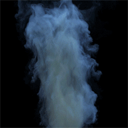
体积
- 首先，创建一个体积 -“Arnold > 体积”(Arnold > Volume)。
- 在体积的“文件名”(Filename)中，打开 VDB 文件。
- 确保有一个“栅格”(Grids)字段，键入“density”。这是用来保存体积 VDB 的动态字段组的名称。
标准体积
- 创建一个标准体积着色器，并将其指定给该体积。将“散射颜色”(Scattering Color)更改为蓝色，并将“透明度颜色”(Transparency Color)更改为橙色。您可能要调整“散射强度”(Scattering Intensity)， 具体取决于场景照明。
- 创建一个 VolumeSampleRGB 着色器，并将 VolumeSampleRGB 着色器的*“输出”(output)（MtoA 中的 R）属性连接到 standard_volume 的**“密度”(Density)***属性。
体积采样 RGB
- 现在，我们抛开技术上的细节，下面来体会使用体积采样 RGB 着色器的各种属性的乐趣。但是在继续操作前，必须确保在体积采样 RGB 着色器的“通道”(Channel)属性中输入单词“density”，否则在我们的体积中将看不到密度通道。
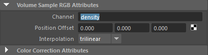
在“通道”(Channel)属性中输入“density”
下面是其他一些更改 volume_sample_RGB 着色器属性的示例：
对比度(Contrast)
| 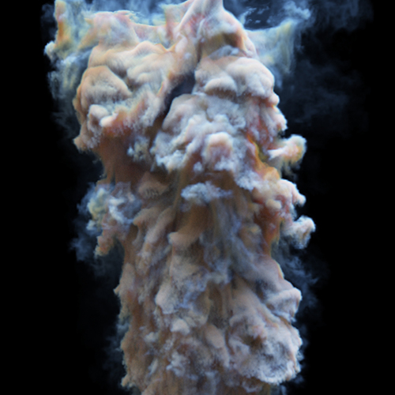 | 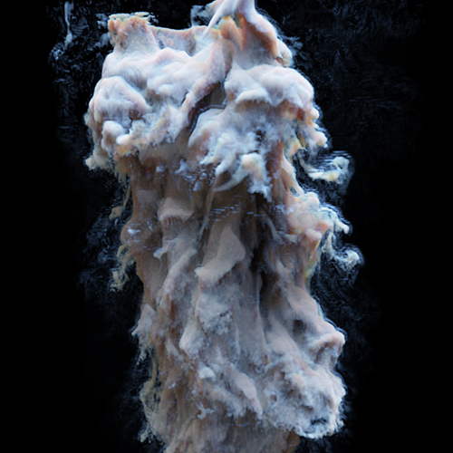 | 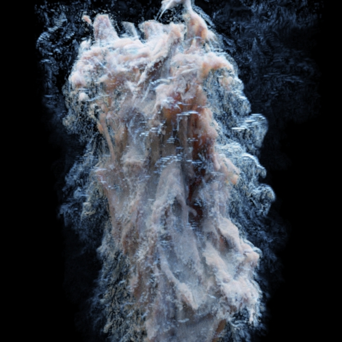 |
| 1 | 2 | 10 |
曝光(Exposure)
| 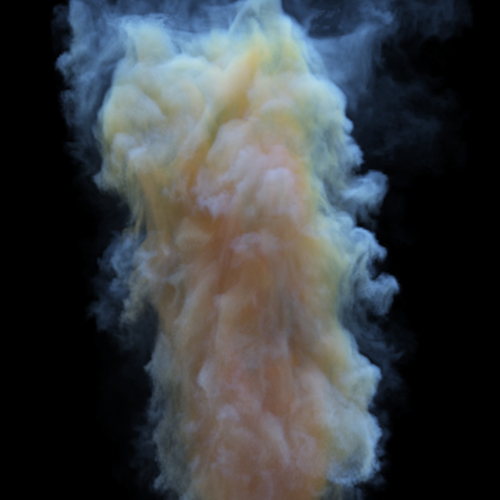 | 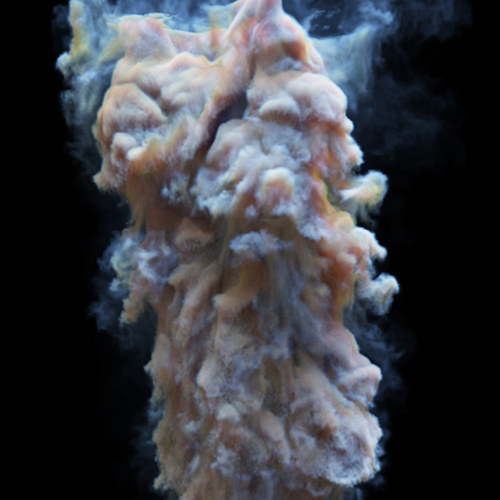 | 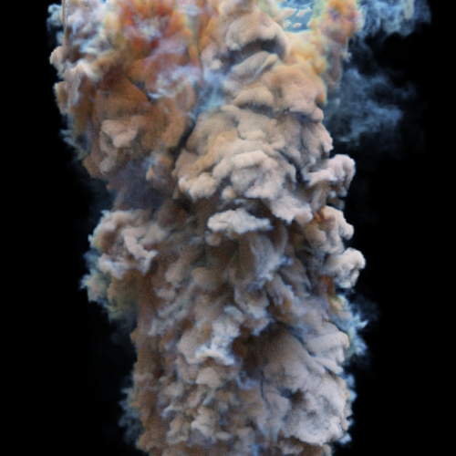 |
| 0 | 1 | 8 |
相乘(Multiply)
| 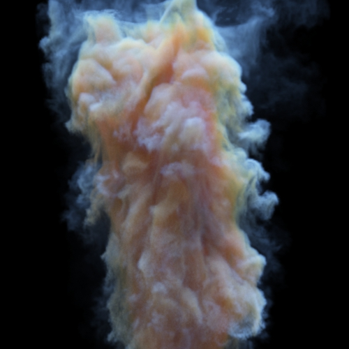 | ||
| 1 | 10 | 25 |
相加(Add)
| 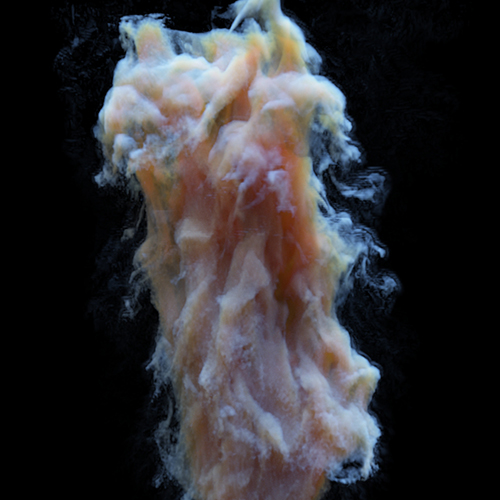 | 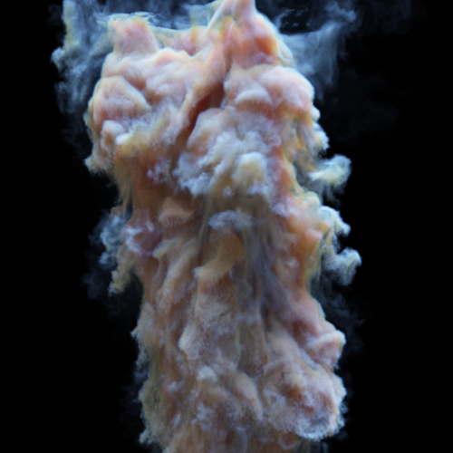 | 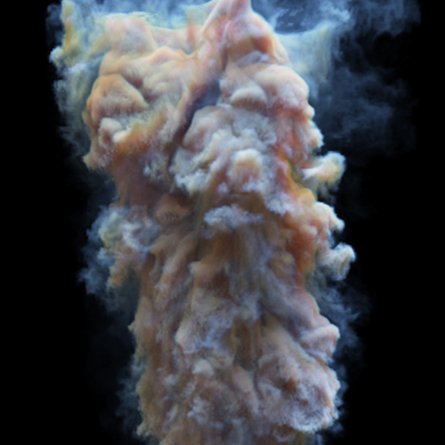 |
| -5 | 0 | 5 |
此示例中使用的最终校正包括按下图所示调整“Gamma”、“曝光”(Exposure)、“相乘”(Multiply)和“相加”(Add)属性：
| 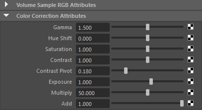 | 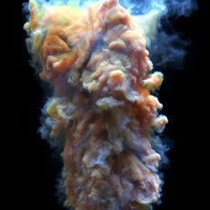 |
volume_sample_rgb 的最终属性
体积光线深度
增大 volume_ray_depth 也会极大影响体积外观。记得增大 volume_samples 数，以抵消产生的任何噪波。此示例中使用的 volume_samples 数为 6。
增大 volume_ray_depth 时，可能需要降低场景照明的曝光，以抵消体积中因照明而额外产生的多次散射。
| 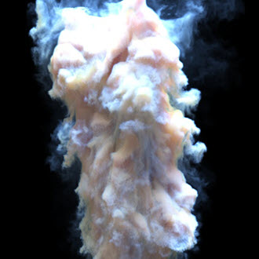 | |
| 0 | 6 |